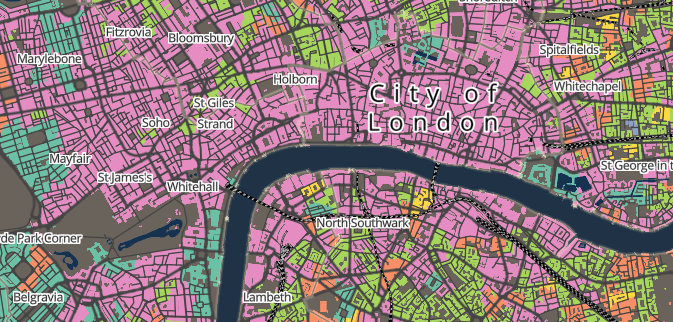

Geocomputation
Welcome
Welcome to Geocomputation. This module offers a deep dive into the principles of spatial analysis and data visualisation while providing a thorough introduction to reproducible research. Over the next ten weeks, you will explore the theory, methods, and tools of spatial analysis through engaging case studies. You will gain hands-on experience in sourcing, managing, cleaning, analysing and presenting spatial, demographic, and socioeconomic datasets.
Prerequisites
Please be aware that for this module you are expected to have access to a working R v4.5 installation and have a basic level of proficiency in programming with R. This includes skills such as installing libraries, loading data, calculating variables, and reshaping data.
For installation instructions and a refresher, please refer to the Getting started and R for Data Analysis tutorials in the GEOG0018: Methods in Human Geography workbook.
Moodle
Moodle serves as the central hub for GEOG0030, where you will find all essential module information, including key details about assessments. This workbook provides links to all required reading materials and contains the content for each computer tutorial.
Module overview
The topics covered over the next ten weeks are:
| Week | Section | Topic |
|---|---|---|
| 1 | Core Spatial Analysis | Reproducible Spatial Analysis |
| 2 | Core Spatial Analysis | Spatial Queries and Geometric Operations |
| 3 | Core Spatial Analysis | Point Pattern Analysis |
| 4 | Core Spatial Analysis | Spatial Autocorrelation |
| 5 | Core Spatial Analysis | Spatial Models |
| Reading week | Reading week | |
| 6 | Applied Spatial Analysis | Raster Data Analysis |
| 7 | Applied Spatial Analysis | Geodemographic Classification |
| 8 | Applied Spatial Analysis | Accessibility Analysis |
| 9 | Data Visualisation | Beyond the Choropleth |
| 10 | Data Visualisation | Complex Visualisations |
This GitHub resource has been updated for the 2025-2026 academic year. The content for 2024-2025 has been archived and can be found here: [Link]
Troubleshooting
For specific assistance with this module, you can:
- Refer to the Moodle assessment tab for queries about module assessments.
- Ask a question at the end of lectures or during the computer practicals.
- Attend the scheduled Geocomputation Additional Support Hours.
- Book into the Academic Support and Feedback hours.
Major updates
This year’s module material features the following major updates:
- All code has been revised to ensure compatibility with
tmapv4. - Package management using
renvhas been removed due to issues wheresfinstalled within the package manager would not bind correctly to GDAL.
Acknowledgements
This workbook is created using the Quarto publishing system. Elements of this workbook are partially based on and modified from:
- The GEOG0030: Geocomputation 2023-2024 workbook by Justin van Dijk
- The GEOG0030: Geocomputation 2022-2023 workbook by Justin van Dijk
- The GEOG0030: Geocomputation 2021-2022 workbook by Justin van Dijk
- The GEOG0030: Geocomputation 2020-2021 workbook by Jo Wilkin
This year’s workbook also takes inspiration and design elements from:
- The Spatial Data Science for Social Geography course by Martin Fleischmann
- The Mapping and Modelling Geographic Data in R course by Richard Harris
The datasets used in this workbook contain:
- Data from Office for National Statistics licensed under the Open Government Licence v.3.0
- OS data © Crown copyright and database right [2024]